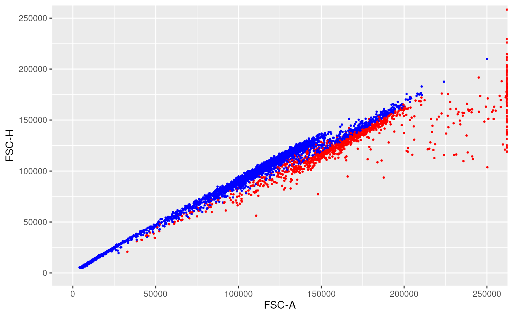
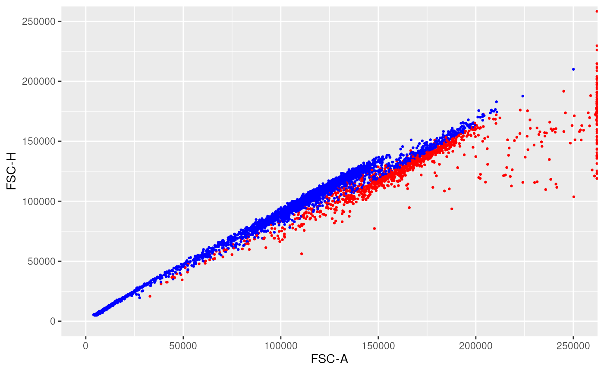

will adjust a polygon gate aimed at cleaning doublet events from the flowFrame. The main idea is to use the ratio between the two indicated channel as an indicator and select only the events for which this ratio is 'not too far' from the median ratio. More specifically, the computed ratio is ch1/(1+ch2). However, instead of looking at a constant range of this ratio, as is done in PeacoQC::removeDoublets(), which leads to a semi-conic gate, we apply a parallelogram shaped gate, by keeping a constant range of channel 2 intensity, based on the target ratio range at the mid value of channel 1.
Usage
singletsGate(
ff,
filterId = "Singlets",
channel1 = "FSC-A",
channel2 = "FSC-H",
nmad = 4,
verbose = FALSE
)Arguments
- ff
A flowCore::flowframe that contains flow cytometry data.
- filterId
the name for the filter that is returned
- channel1
The first channel that will be used to determine the doublet events. Default is "FSC-A"
- channel2
The second channels that will be used to determine the doublet events. Default is "FSC-H"
- nmad
Bandwidth above the ratio allowed (cells are kept if their ratio is smaller than the median ratio + nmad times the median absolute deviation of the ratios). Default is 4.
- verbose
If set to TRUE, the median ratio and width will be printed. Default is FALSE.
Examples
data(OMIP021Samples)
# simple example with one single singlets gate filter
# FSC-A and FSC-H channels are used by default
mySingletsGate <- singletsGate(OMIP021Samples[[1]], nmad = 3)
selectedSinglets <- flowCore::filter(
OMIP021Samples[[1]],
mySingletsGate)
ff_l <- flowCore::Subset(OMIP021Samples[[1]], selectedSinglets)
linRange <- c(0, 250000)
ggplotFilterEvents(
ffPre = OMIP021Samples[[1]],
ffPost = ff_l,
xChannel = "FSC-A", xLinearRange = linRange,
yChannel = "FSC-H", yLinearRange = linRange)
 # application of two singlets gates one after the other
singletsGate1 <- singletsGate(OMIP021Samples[[1]], nmad = 3)
singletsGate2 <- singletsGate(OMIP021Samples[[1]],
channel1 = "SSC-A",
channel2 = "SSC-H",
filterId = "Singlets2")
singletCombinedGate <- singletsGate1 & singletsGate2
selectedSinglets <- flowCore::filter(
OMIP021Samples[[1]],
singletCombinedGate)
ff_l <- flowCore::Subset(OMIP021Samples[[1]], selectedSinglets)
ggplotFilterEvents(
ffPre = OMIP021Samples[[1]],
ffPost = ff_l,
xChannel = "FSC-A", xLinearRange = linRange,
yChannel = "FSC-H", yLinearRange = linRange)

ggplotFilterEvents(
ffPre = OMIP021Samples[[1]],
ffPost = ff_l,
xChannel = "SSC-A", xLinearRange = linRange,
yChannel = "SSC-H", yLinearRange = linRange)
# application of two singlets gates one after the other
singletsGate1 <- singletsGate(OMIP021Samples[[1]], nmad = 3)
singletsGate2 <- singletsGate(OMIP021Samples[[1]],
channel1 = "SSC-A",
channel2 = "SSC-H",
filterId = "Singlets2")
singletCombinedGate <- singletsGate1 & singletsGate2
selectedSinglets <- flowCore::filter(
OMIP021Samples[[1]],
singletCombinedGate)
ff_l <- flowCore::Subset(OMIP021Samples[[1]], selectedSinglets)
ggplotFilterEvents(
ffPre = OMIP021Samples[[1]],
ffPost = ff_l,
xChannel = "FSC-A", xLinearRange = linRange,
yChannel = "FSC-H", yLinearRange = linRange)

ggplotFilterEvents(
ffPre = OMIP021Samples[[1]],
ffPost = ff_l,
xChannel = "SSC-A", xLinearRange = linRange,
yChannel = "SSC-H", yLinearRange = linRange)